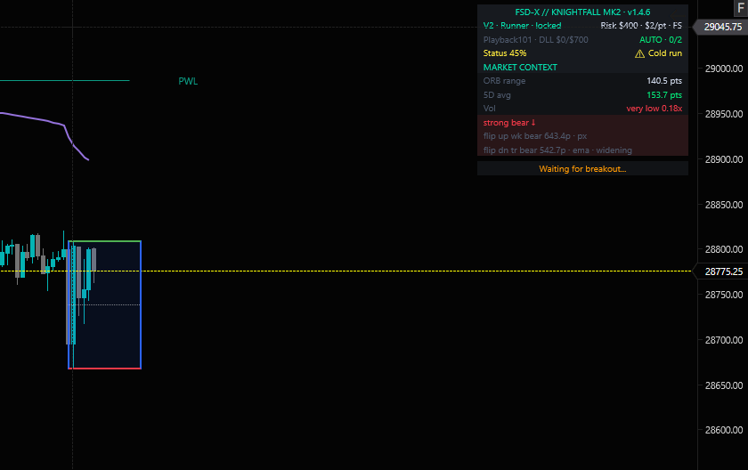
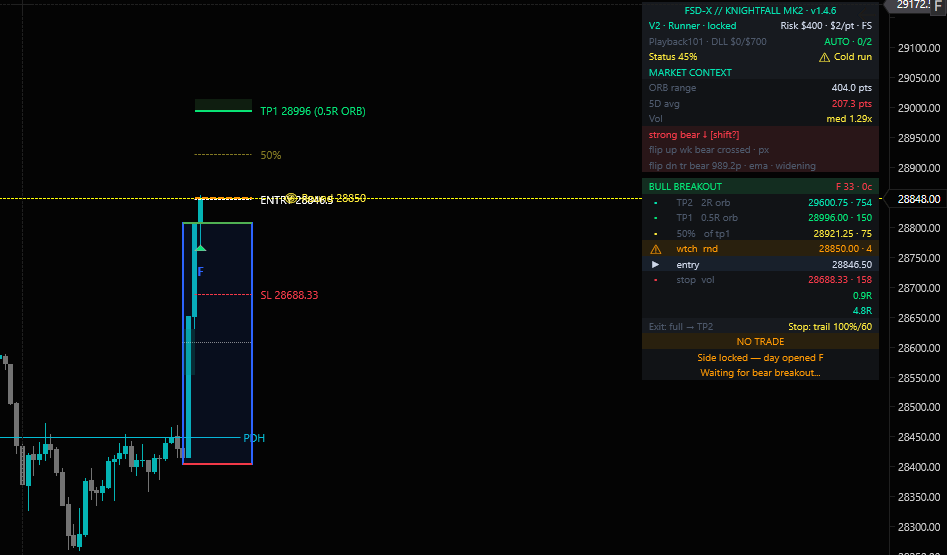
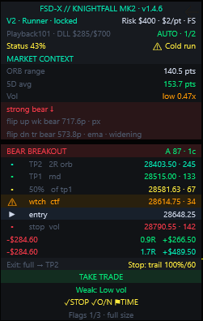

You don't need another strategy. You need to know which trade to take.
FSD-X grades every Nasdaq (NQ / MNQ) opening range breakout A+ to C before you enter, and gives you the exact stop and target. Built for the prop-firm trader. The point isn't more trades. It's knowing which mornings to skip.
Every breakout gets a grade before you click.
Setups are graded A+ down to C as they form. You take the strong ones and skip the rest, instead of taking every breakout and hoping.
- 1The opening range, drawn for you
- 2Grade and score, live as the setup builds
- 3One verdict in plain words: take it or don't

No entry until the break confirms.
Price near the range isn't a signal. Knightfall waits for a confirmed close outside it, so you're not jumping in early on a fake move or chasing one you missed.
- 1Range high and low, locked after the open
- 2Market context: range size, volume, trend
- 3"Waiting for breakout" until it's real

Stop and targets are set before you're in.
The setup decides the stop and both targets, then shows the risk and reward at your size before you enter. The plan is fixed by the rules, not by nerves once the trade is on.
- 1Two targets, built from the range
- 2Entry marked where the break confirms
- 3Stop placed by the rules, before entry
- 4With the Auto Trader, both go in as working orders

Illustrative screenshot from a playback account. Dollar figures show one open position’s risk, reward and running P&L, not a performance result.
Some mornings the answer is no trade.
When a breakout doesn't clear the quality bar, Knightfall says so. It's a filter first and a signal second, and skipping the weak mornings is the point.
- 1Weak setup graded F, flagged before entry
- 2NO TRADE, with the reason

Seen enough? Trade it with us tomorrow morning.
Membership is capped so support and the live room stay workable. One person runs this.
30-day free trial · no charge until day 31 · cancel anytime in one click via Whop.
Or join the Discord free → Look around first. Market talk and free tools are open to everyone.
More than Knightfall. A lot more.
Knightfall is the core, but the full membership comes with everything we’ve built around it: the indicators, the automation, a platform for your accounts and backtests, a side panel for your chart, and people to trade the open with. Only want part of it? Compare plans.
The graded system →
Grades every opening-range breakout A+ through C as it forms, filters the ones that don't qualify, and hands you the exact stop and target. Everything below is built around it.

The member platform
Every prop account, trade and backtest in one place, with warnings before the firm’s limits.
Trade it, or let it run
Knightfall placed for you through the broker you connect.
Knightfall + 3 indicators
The graded system plus the tools around it.
Nexus 2.0 side panel
The tools you’d open five tabs for, next to your TradingView chart.
You don’t trade the open alone
Live with us every weekday at 8:30 AM CT.
Knightfall is live on NinjaTrader 8.
The same graded ORB engine, native on NinjaTrader. Let it trade hands-free or take the trades yourself — one strategy, one chart.
- ·Hands-free or manual, all in one
- ·No webhooks, alert setup or bridge service
- ·Stop and target live on your chart as working orders
- ·The full Market Context dashboard, rebuilt for NinjaTrader
Approved by NinjaTrader. Included in the full membership, or on its own as Knightfall NT8 from $59.99/mo with a 30-day free trial.
Backtested for years. Traded in the open.
7-year backtest, after costs
Win rate, profit factor and drawdown for every trade since 2019, with commission and slippage included. See the setups we run, then size the system to your own account. This is a backtest, not live trading.

Shown in R, each trade's result divided by its own stop, so it reads the same at any risk setting. Hypothetical results.
Live track record — wins and losses
Every setup the strategy has signaled since going live, posted openly — the red days too. Shown on the $400 risk profile. These are strategy signals, not personal account results.
Backtested and live figures are shown separately and are never combined. Past performance — backtested or live — is not indicative of future results. Individual results vary and most traders lose money.
What members are saying
⚠ Testimonials reflect the individual experience of the member quoted and are not a guarantee, promise, or projection of results. They are not representative of all members. Individual results vary and most traders lose money. No compensation was provided for these reviews.
"I've been using this indicator for a while now and honestly, it's been a great experience so far. What really stood out to me is the grading system — once you understand how the grading works alongside the setups, it becomes much easier to decide how much risk to take on each trade. It adds a level of clarity that most indicators don't provide. I'm not saying it's some magic tool — you still need discipline and consistency — but if you actually stick with it and follow the system properly, it brings real structure to how you trade."
"After spending a good amount of time trading with all the indicators, I can confidently say this is not just another trading product — it's a complete environment built around discipline, structure, and real execution. What stands out immediately is how present DJ is. The NY breakout sessions are one of the strongest aspects of the community — being able to watch setups unfold in real time is extremely valuable. The tools are extremely well built, the signals are clean, and the system is designed to remove as much noise as possible. If you're serious about trading and want something that's structured, realistic, and supported by a strong community and an engaged creator, this is absolutely worth it."
Trading with us by tomorrow morning
One membership, everything unlocked. No charge until day 31. Cancel anytime.
Add the indicators to TradingView, claim your Discord access, set up Nexus. The guide walks you through it.
Join the live room every market morning. Watch the setups grade, hear the reasoning, trade them alongside the community.
Start your 30-day free trial
The full suite, the Auto-Trader, the live room, and the community — all at one price. Monthly includes a 30-day free trial. No charge until day 31.
Monthly Access
The complete ecosystem — indicators, Auto-Trader, and live trading with us every market morning.
Includes a 30-day free trial — no charge until day 31. Cancel anytime.
Quarterly Access
The complete ecosystem — commit a full quarter and give the system time across changing conditions.
No trial on this plan — instant access, billed at checkout. Cancel anytime before renewal.
Annual Membership
The complete ecosystem at the lowest recurring rate. Your price is locked in — won't increase as the suite grows.
Want just one piece? Arkham is free, Nightwing is $9.99 for the platform and Nexus on their own, and Raven is $29.99 for stop, targets and sizing on every ORB break. Knightfall NT8 is $59.99 for just Knightfall on NinjaTrader 8. Compare all five →
Have questions? Talk to the person who built it.
Not sure which product fits you, or want help setting it up? Book a quick 1-on-1 call with me, or message me on Discord. No membership needed to ask.
Or just look around first. The Discord is free: market talk, our free Arkham indicator, and traders working on the same thing. What's free vs. members →
NinjaTrader® Ecosystem Vendor
FSD-X is proud to be an official ecosystem vendor for the NinjaTrader® trading platform. Our indicators are purpose-built to operate within NinjaTrader's professional infrastructure. For optimal execution speed and chart syncing, we recommend a workspace powered by Kinetick® streaming market data.
NinjaTrader® is a registered trademark of NinjaTrader Group, LLC. No NinjaTrader company has any affiliation with the owner, developer, or provider of the products or services described herein, or any interest, ownership or otherwise, in any such product or service, or endorses, recommends or approves any such product or service.